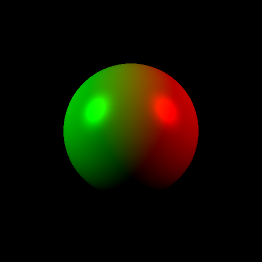
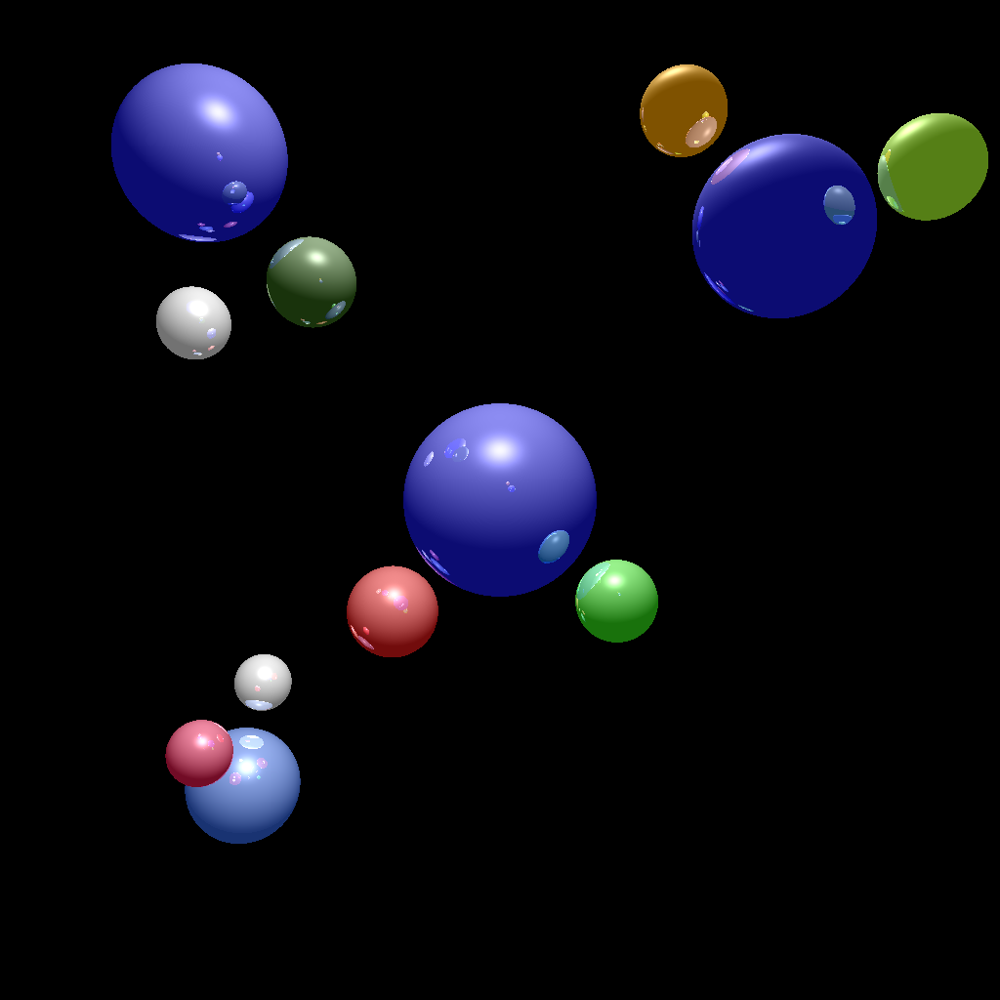

Garrett Phoonswadi
Hello my name is Garrett Phoonswadi and I have a Bachelor's degree in computer science and Biological Science from Colorado State Univeristy. I recieved my Biology degree in 2013, and my Computer Science degree in 2017. After earning my Biology degree I went into radiology research focusing on radiations affect on cancer cells. During my stretch in research I performed many different experiments and collected massive amounts of data. I started to get interested in computer science when trying to quantifiy the data I was collecting. This was a fun time in my college career. I was published in 2015 and traveled to Japan for a short amount of time to continue my research. After Japan I decided to study Computer Science
I Started studying computer science in 2014. In 2015 I started an internship at HP in the Storage division. I worked for HP until 2016 when the company split into Hewlett Packard Inc. and Hewlett Packard Enterprise. I stayed on the same team working for HPE. I took a spring semester off in 2016 and worked full time for HPE. After that I returned to CSU to finish my degree. I have since continued work on the same team as a full-time employee working in Boston. My future goals are to combine both of my degrees to push research to the next level!
Projects
HPE
I wish I could put the project I work on at HPE on here but unfortunatly I cannot.
Ray Tracer
This ray tracer was build from scratch in c++ if you are interested in it I have it posted on github. It still needs a little fine tunning but it can draw some nice pictures.
 Amino Acid Converter
This program takes in a squence of nucleotides and translates them to the amino acid sequence

Clash
Clash is a side project I am slowly working on. It is intended to help people affected with colorblindess like myself. The phrase I'm using is "Clash for the colorblind or the fashionably uninclined." Still very early in devlopment check github to see progress.